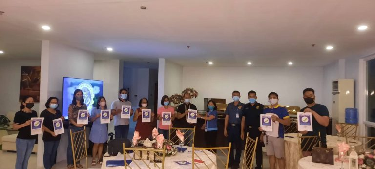
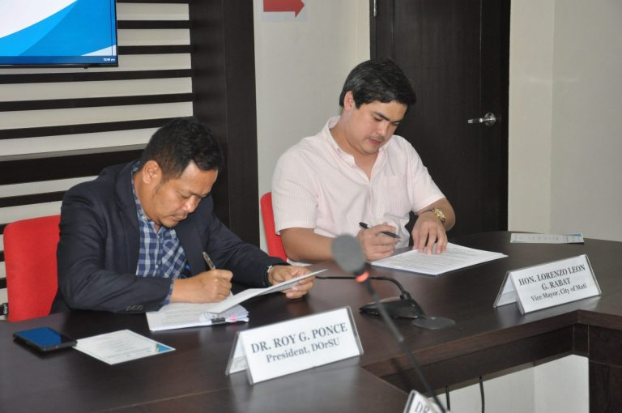
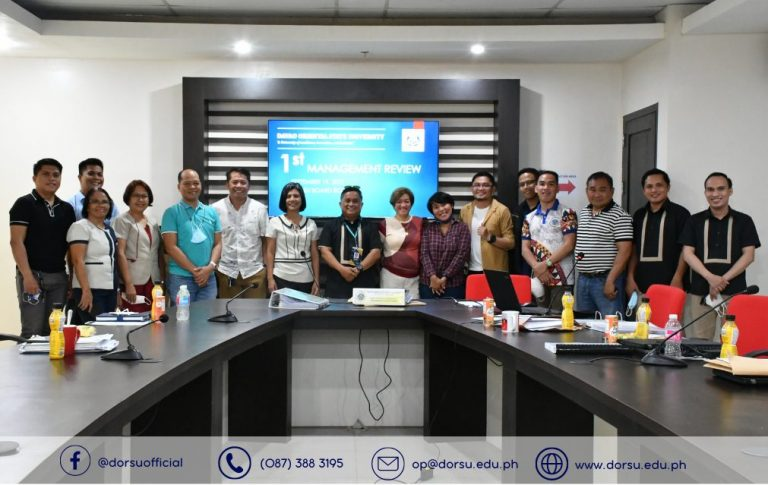

The Department of the Interior and Local Government (DILG) awarded Davao Oriental State University (DOrSU) the Safety Seal Certification on September 21, 2022, Wednesday, at the DOrSU hotel, confirming that it complies with the minimum public health standards set by the government for conducting face-to-face laboratory classes.
DOrSU President Dr. Roy G. Ponce congratulated all the DOrSU officials and constituents for the effort to comply with the requirements.
President Ponce also expressed his thanks to DILG City of Mati, headed by Ms. Ma. Theresa Obatonon, City of Mati PNP Chief PLtCol Ernesto M. Gregore, PMaj Al Anthony Gumban, CFM BFP SInsp Israel Johann C. Alagaban, SFO3 Jesusito Masanguid, and DILG Staff Jade Piligrin for subjecting DOrSU to inspection.
Thirty-four safety seal certificates in total were given to the University.

Dr. Roy G. Ponce, President of DorSU, and Vice Mayor Lorenzo Leon G. Rabat, representing the Office of the City Vice Mayor (OCVM), signed a Memorandum of Agreement (MOA) for the “Ka-asENZO” Thesis Educational Assistance Program (TEAP) to help indigent students cope with the financial challenges in pursuing a college education.
Students who have already received a scholarship or financial assistance from any source are not eligible for TEAP to help those most in need of it.
During the evaluation, students must also present their proof of eligibility, residency, and scholastic record.
Additionally, the program’s beneficiaries are only students completing their thesis requirements.
TEAP is a program initiated by the Office of the City Vice Mayor Lorenzo Leon G. Rabat, which, if implemented successfully, will redound to the good of the grassroots communities.

The top management of Davao Oriental State University met today, September 19, 2022, at the DOrSU Boardroom, for the first Management Review to consider possible improvements, effectiveness, adequacy of the current Quality Management System (QMS), potential improvement opportunities, and to comply to ISO 9001:2015 standards.
DOrSU President Dr. Roy G. Ponce said this QMS review would identify areas where the university and its employees may improve, especially when it comes to positioning the institution as a Smart Regenerative Futures University.
Dr. Arvin A. Andacao also presented the internal evaluation results for Sort, Set in Order, Shine, Standardize, Sustain (5S). He said all offices are compliant; however, some buildings must be “consistently” checked to avoid hazards and accidents.
Action plans were created to address the concerns.